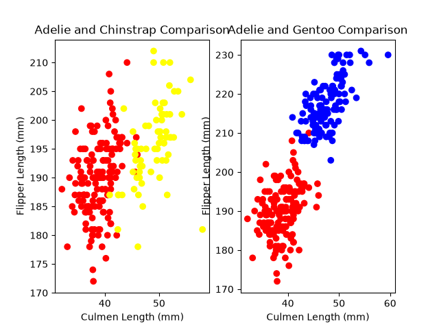

Data Analysis · EDA
Penguin Data Analysis
An exploratory analysis comparing Palmer penguin species across physical measurements and island information.

Problem
Explore which measurements differ across penguin species and identify data-quality issues that affect interpretation.
Process
The analysis cleans the dataset, summarizes distributions, compares species, and visualizes relationships among culmen length, flipper length, body mass, and island.
Results and interpretation
Chinstrap penguins showed greater average culmen length than Adelie penguins, while Gentoo penguins showed greater average flipper length and body mass. The analysis also investigated an anomalous flipper-length value.
Limitations
This is descriptive analysis. The observed relationships should not be interpreted as causal.